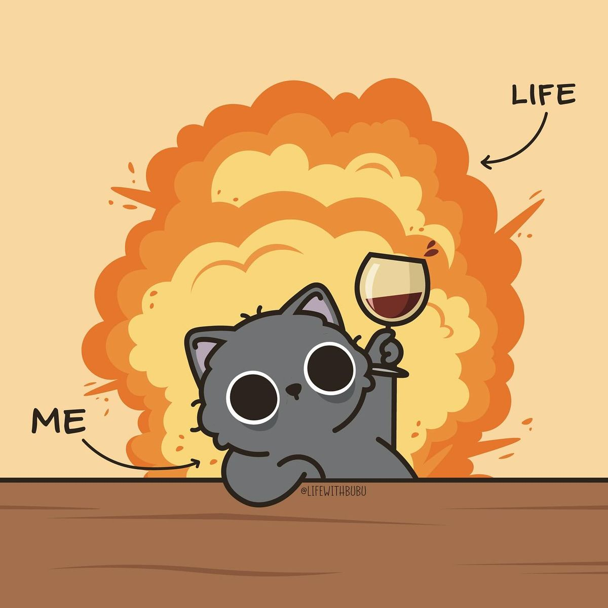

Sareta
Pixel

Liked by 4GeeksAcademy, html5, Web and 225,000 others
Yo intentando ir por la vida con dignidad, mientras la vida decide hacer una escena de acción de bajo presupuesto detrás de mí.
Porque al final hay días en los que no puedes controlar el incendio, ni la explosión, ni el drama, ni el “¿pero ahora qué ha pasado?”.
No siempre se puede estar bien, pero oye… al menos podemos seguir adelante con humor y una copa imaginaria en la mano.